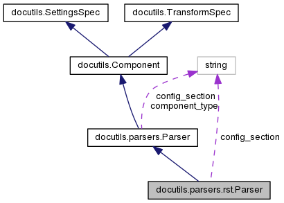

Markdown and reStructuredText are two markup languages with plain text formatting syntax designed for easy input with any text editor. Each has a whole host of tools that can convert marked up text to publishing formats like HTML or PDF.
Software developers these days have to be familiar with such markup languages because they serve as the basis for many documentation systems. In this post I want to examine the tradeoffs between Markdown and reStructuredText from the point of view of a programmer.
Where Markdown shines
The history of markup languages for describing complex document structure with rich formatting through textual input is long and illustrious, dating back at least to the early 1970s with troff and later on TeX. In the 1990s these formats escaped the specialized dominion of mathematicians and programmers, as a multitude of people went online and wanted to interact through mediums like forums. This led to the birth of markup languages like BBCode in 1998.
Markdown came a bit later, in 2004, and really pushed the concept over the brink of ubiquitousness. Was it because of the relative fame of its inventors (John Gruber and Aaron Swartz)? Or maybe it was just a good idea in the right place at the right time, coupled with a catchy name? It's hard to say now, but one thing is certain - these days Markdown the big gorilla in any discussion of textual markup languages. It's likely to be the first thing on one's mind when thinking of a technology to use for, say, documentation or textual entry into some program.
So the best thing about Markdown is, IMHO, its popularity. It's a natural choice since it's so familiar, and one can find tools in almost any conceivable programming language and environment for parsing and munging it. Just by virtue of being the default markup language for StackOverflow, Reddit and GitHub, Markdown is probably well familiar to most developers these days.
Where reST shines
reStructuredText's initial release dates back to 2002, actually predating Markdown. The problem is, it lived in relative obscurity for most of its life, confined to some parts of the Python community. The core Python documentation has been written in reST for quite a while, but only after the release of Sphinx has it seen serious uptake outside. These days reST is taken more seriously - GitHub supports it for pages and wikis, and some major projects use it by default for their documentation - including the Linux kernel, OpenCV and LLVM/Clang.
To me, reST stands out against Markdown it three main aspects, which I'll cover in detail:
- It's more fully-featured.
- It's much more standardized and uniform.
- It has built-in support for extensions.
More features
reST comes with more built-in features for writing more complex documents. Some examples I personally use the most: footnotes, tables, citations, tables of contents. There is no standard way of doing these in Markdown, which is a problem because these and other features are important for implementing complete documentation systems. Sure, these can be added as extensions; but Markdown doesn't have a standard extension mechanism, which means that every system develops its own non-standard way of doing things. Which leads me to...
More standardized and uniform
The original Markdown syntax was defined de-facto by its initial implementation; there was no real standard to speak of, and the built-in assumptions and bugs of the initial implementation became unoffically baked in. There's a long and fascinating background story about the standardization attempt of Markdown led by Jeff Attwood (for the sake of StackOverflow); you can easily google for it.
I'll just point to the CommonMark spec, which is the result of this attempt. It has a section named "Why is a spec needed" listing some of the underspecified aspects of Markdown; it's worth reading.
Due to this, what ends up happening is that there's no single Markdown. There is a multitude of related markup languages with a common core, some more conformant than others. When features are missing, sites/tools usually roll on some custom extension which isn't coordinated with other sites/tools.
reST, on the contrary, has a fairly comprehensive spec and a single canonical implementation that is still being actively developed - the docutils project. Sure, there are alternative implementations (such as a JS one for client-side rendering), but these at least can follow the written-down spec. Therefore, there's really just one reST, and the source you write is likely to work in multiple systems.
Built-in support for extensions
As discussed before, Markdown implementations are all over the place when it comes to features beyond the commonly-agreed-upon core. reST is very different. Extension is a core design principle, and both custom roles (for inline elements) and directives (for block elements) can be easily added. It's therefore straightforward to add extensions for commonly-needed stuff like syntax-highlighted code blocks, math equations for Latex rendering and so on.
With Markdown, to add an extension one has to modify the parser, which makes every Markdown implementation out there an island of its own. In reST, adding an extension is just an API call in docutils. With this in hand, documentation systems like Sphinx and static website generators like Pelican heavily customize their reST input language while using the original docutils parser.
Conclusion
So, which one to choose? I'd say this depends on the use case. For fully-fledged documentation of a large (or small) software project, I'd definitely go with reST, most likely using Sphinx. I hope this post managed to convey why reST is a better choice for this scenario.
For a simple markup system use in things like forum comments, or marking up chat messages, the decision is trickier. Markdown is a good choice because more users would be familiar with it. On the other hand, if you're already using reST for something else, consistency is important too.